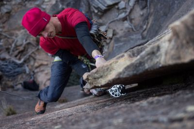
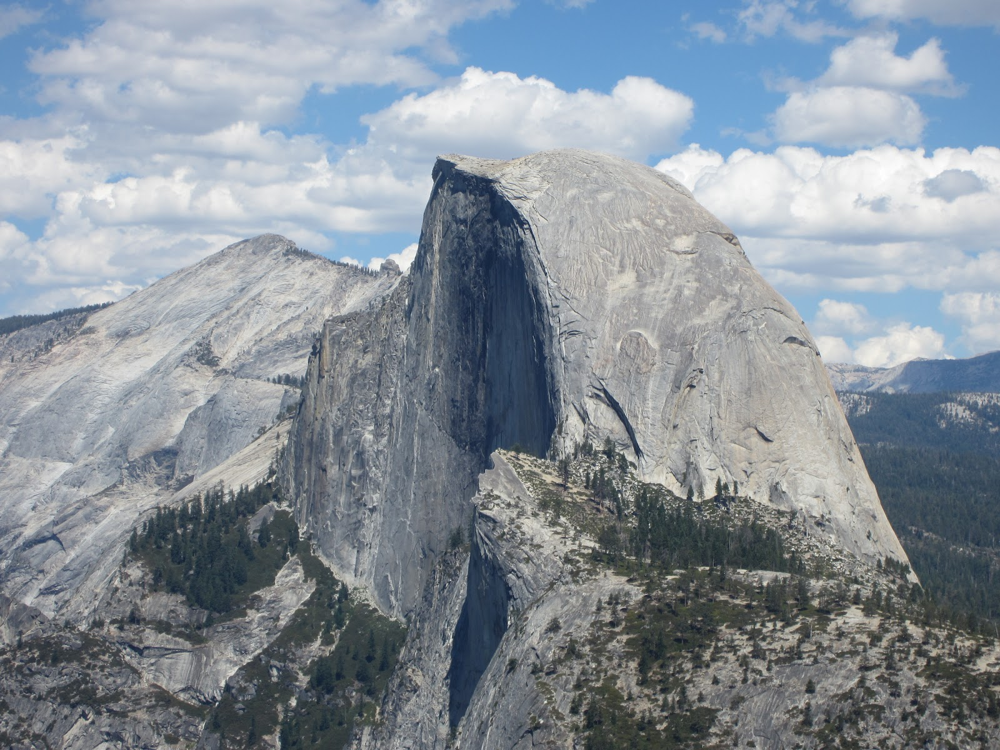

| Bouldering | TopRope | Sport/Lead | Trad | Big Wall | Free Soloing |
| Easy/Safe | Easy/Safe | Medium/Small Risk | Very Hard/Risky | Very Hard/Very Risky | Extreme/Deadly |
| Beginner Friendly | Beginner Friendly | Intermediate | Experienced | Experienced/Elite | Alex Honnold |
Bouldering is the most beginner-friendly type of climbing available. Bouldering generally involves rather short climbs of 10-20 feet. The safety equipment is usually only a simple gymnastics mat or portable bouldering mat if you are outdoors. You also need a pair of shoes, which is required for all rock climbing, and a chalk bag. The chalk is to make sure your hands remain dry while on the wall so you can maximize grip. Some boulders have top outs, where you can climb over the top of the boulder. Some, usually gym boulders, dont have topouts and usually have a set "finish hold" where you grab it then fall to the ground. You can also get injured while bouldering if you fall incorrectly, so make sure to learn that before beginning.
Bouldering involved a short set of more powerful moves. This is generally different from longer rope routes because most rope routes focus more on endurance than power. This is why climbers that specialize in bouldering might not be as good in other disciplines becuase they would lose their strength rather quickly.
Top rope climbing is another popular discipline of the sport. A person is attached to a rope on a pulley at the top of a route with a belayer at the bottom. There is little slack, so the climber never falls that hard. The routes are usually 30ft or more and do not have a place to top out and stand on at the top unless you are climbing outdoors.
Top rope climbing is much more endurance based than bouldering, but less so than sport, trad, multipitch, or bigwall. The moves are usually not as difficult as a comparable bouldering grade, but require more endurance. It is also very safe because even if you fall, there is little chance of injury unless your belayer makes a really bad error.
Sport or lead climbing is one of the more difficult disciplines of climbing. It involves the climber with the rope below them and attaching or "clipping" them to quickdraws, which are carabiners on small strips of strong nylon that act as a pulley if the climber falls. They are drilled into the wall. Falls can sometimes be dangerous if the climber does not clip in enough and climbs too high above his last clip. The climber can potentially hit their head on the wall because of how fast the fall will be. Some climbers purposely take big falls as a sort of victory celebration. That is called a whip because it looks like the rope whips in a way.
Sport climbing is a lot about endurance and efficiency. Some sport climbing routes can be on an onverhang and can climb just like a boulder, which means a climber would need to maintain their power over a long amount of time. Sport climbing routes are about one pitch long, or about 70-100 feet in length or one rope. That is a whole lot of climbing to do. It gets a lot harder when the climbing grade increases because you have smaller holds and fewers places to rest your arms on the route.
Trad climbing is when you lead climb and clip into quickdraws that are held into the rock differently. The quick draws are attached to small devices called cams or nuts. A cam is a spring loaded device that expands the metal contacts when it is inserted into a crack in the wall. When it is pulled on, it expands more and generates more force and friction. A nut is a device that gets wedged into the rock to generate friction. Trad climbing can be very dangerous if you are climbing on loose or low quality rock. Be sure to place your equipment carefully because if you take a big fall on it, you can end up pulling out a nut or cam and fall even more or worse, fall to the ground.

Trad climbing is simlar to sport, but the grades are quite different. The english trad grading system is a bit complicated to get into, so it would be easier to look up a grade chart. When you are climbing, make sure to be careful with gear placements and make sure that you tell your belayer if you are about to take a fall. If they can take the slack first, it can make the fall a little less risky.
Big wall climbing is simple. It is climbing on massive walls, usually hundreds or thousands of feet high. Think El Capitan or Half
Dome in Yosemite National Park. It is usually trad climbing with some bolts along the way or at the end of a pitch.

Free soloing is climbing without any safety equipment. It requires extreme mental willpower and endurance. One person famous for
free soloing is Alex Honnold.